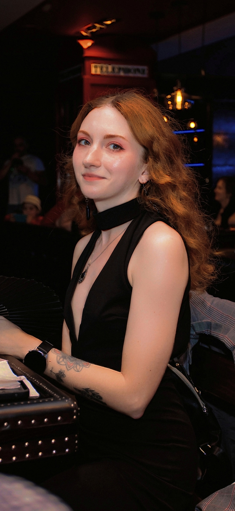

Имя и фамилия:
- Мундштукова Татьяна Дмитриевна
Контакты для связи:
- +375 44 766-87-90
- tg: @chumovoi_doctor
Краткая информация о себе:
- Моя цель — развить уверенные навыки во фронтенд-разработке, чтобы создавать визуально выразительные и функциональные интерфейсы. Я стремлюсь соединить творческий подход с технологической точностью, используя программирование как инструмент для воплощения идей.
- Сильные стороны
- Креативность и внимание к деталям
- Аналитический ум и способность разбирать сложные системы
- Умение адаптироваться и искать нестандартные решения
- Глубокий интерес к визуальному дизайну и пользовательскому взаимодействию
- Постоянное стремление к самосовершенствованию
Навыки:
Навыки программирования
- HTML, CSS, JavaScript — базовые навыки верстки и динамики интерфейса
- Python — основы синтаксиса, структур данных и скриптов для автоматизации задач
Графический и мультимедийный дизайн
- Photoshop, InDesign — уверенный уровень: работа с макетами, графикой, типографикой
- Blender — начальные навык 3D-моделирования и визуализации
- Sony Vegas — базовая видеомонтажная практика: нарезка, переходы, цветокоррекция
Опыт работы:
- У меня пока нет коммерческого опыта работы во фронтенде, но я активно учусь: самостоятельно изучаю HTML, CSS, JavaScript и современные подходы к разработке интерфейсов. Мой интерес подпитывается желанием создавать уникальные цифровые пространства, где сочетаются эстетика и функциональность. Я не боюсь сложных задач и готова учиться на практике, прислушиваясь к рекомендациям наставников и анализируя лучшие примеры из индустрии.
Образование:
Высшее
- Белорусский государственный медицинский университет, специальность - гигиена, эпидемиология, 2019
Курсы
- "Основы диетологии", 2018
- "Парикмахер-универсал", 2016